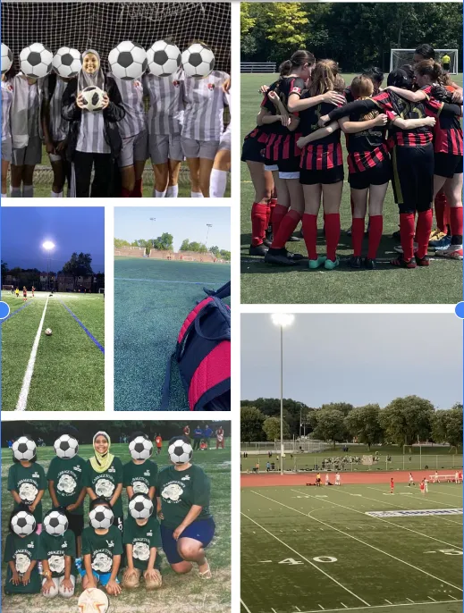
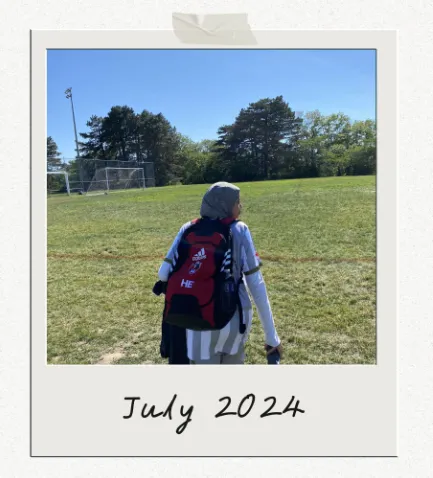
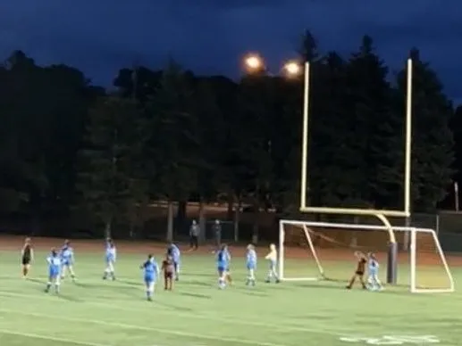
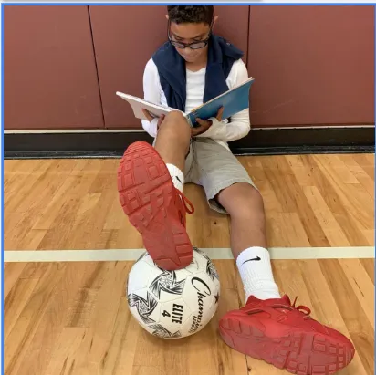
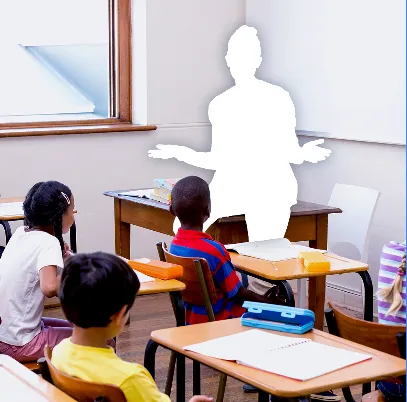
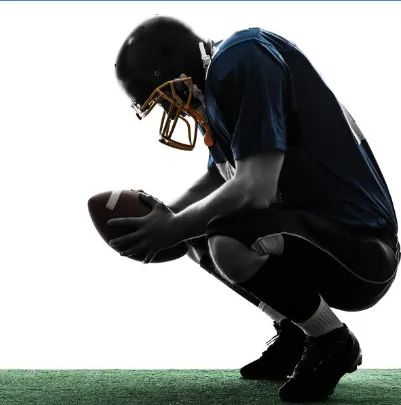

Where it started
Research Topic and Question
Research Topic:
Examining the Academic Impacts of Extracurricular Sports on Black Students in Toronto District School Board High Schools.
Research Question:
"How does participation in extracurricular sports impact the academic performance of students in Grades 9–12 within the Toronto District School Board?"



Why this topic
This research topic and question is very meaningful to me. As a Black Muslim visible minority athlete, I have seen and faced the challenges Black students as myself can face in schools. With my personal experience, it made me want to explore about how extracurricular sports affects the academic success of Black students.
I want to better understand both the benefits and the challenges of balancing sports and academics. Through this website, I created recommendations to help Black students succeed both in the classroom and in extracurricular sports.
What I found
What I found while doing my research is that many students that do participate in academics and sports report that participating in sports during school personally helps their academic performance. But with the pro's there also comes some cons. With academic responsibilities such as tests, quizzes and assignments, it can come in between student practices and games. Students may begin to struggle when both school and sports become too intense. But with the involvement in sports, it motivates students to push and challenge themselves.
What the research found
Research Findings
Three major themes stood out in the experiences of Black student athletes in TDSB high schools are: A Tough Balancing Act, Lack of Teacher Support & A Struggle with Mental Wellness: These themes highlight the need for stronger support systems not just for athletic success, but for students academic performance and overall well being.
A Tough Balancing Act

Many students shared that managing both academics and sports is a real challenge. Between practices, games, and schoolwork, finding time to stay on top of everything often feels overwhelming especially during busy seasons.
Lack Of Teacher Support

Several participants felt that teachers don't always understand the pressure of being a student athlete. When sports commitments clash with school responsibilities, students said they often receive limited flexibility or support, which can affect their performance and confidence.
Mental Wellness Matters

While sports can be great for stress relief, the pressure to succeed in both academics and athletics can also affect one's mental health.